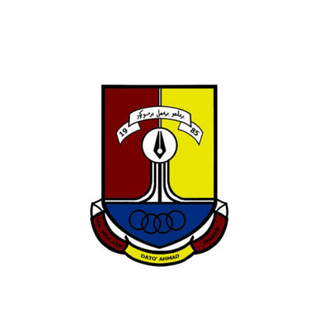
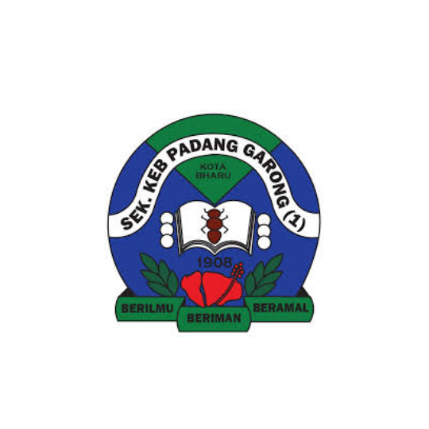

What I Learned in Information Management Courses
What I Learned in Information Management CoursesMy education journey has been a steady and getting better. The Information Management course that I'm currently taking has taught me how to organise, manage, and share information in digital environments. I also learnt about basic web content, making digital content, and database systems along the way. These situations have taught me useful things, given me useful skills, and helped me understand how information helps me with daily tasks. As I study, I keep learning new things and getting better.
| Year | Institution | Details | Adress | |
|---|---|---|---|---|
| 2023 - 2026 | Universiti Teknologi Mara, Kelantan | Diploma in Information Management | 5 Semester | UiTM Kelantan, Kampung Belukar, 18500 Bandar Machang, Kelantan |
| 2018 - 2023 | SMK Dato' Ahmad Maher | Pure Science + SPM | 5 Years | Jalan Long Yunus, 15200 Kota Bharu, Kelantan |
| 2012 - 2017 | SK Padang Garong 1 | UPSR + UPKK | 6 Years | Jalan Hospital, Bandar Kota Bharu, 15200 Kota Bharu, Kelantan |
What I Learned in Information Management CoursesMy Information Management course covers a range of subjects related to information organisation, digital systems, and content management, including: